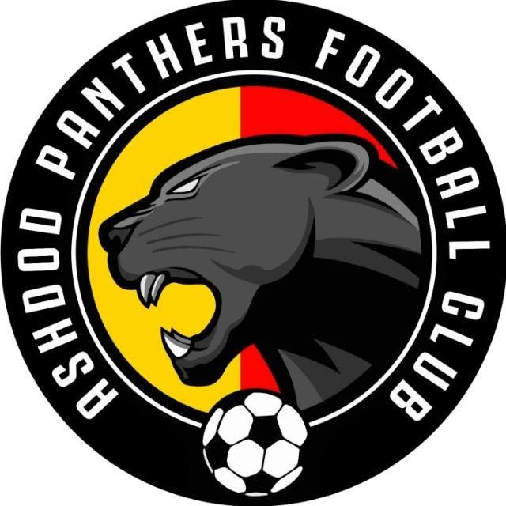

כל העיר. כל הקבוצות. כל המספרים.
הספורט
של אשדוד.
במגרש אחד.
מהיציע ועד הדור הבא. הקבוצות, התוצאות והאנשים שמניעים את הספורט בעיר.
על הלוחמשחקים אחרונים
טוען תוצאות…


CHOOSE YOUR GAME
הספורט שלכם מתחיל כאן
ארבע כניסות.
כל הספורט של אשדוד.
01↗
כדורגל
הקבוצות שמייצגות את העיר. טבלאות, משחקים, כובשים ונתוני שחקנים.
כניסה למדור ←02↗

מחלקות הנוער
הדור הבא של הכדורגל האשדודי. נוער, נערים, ילדים וטרום־ילדים.
כניסה למדור ←03↗
כדורסל
מהפרקט אל המספרים. תוצאות, קלעים, המשתתפים והמשחק הבא.
כניסה למדור ←04↗

כדוריד
הכדוריד של אשדוד. תוצאות, כובשים, שוערים ומפגשים קרובים.
כניסה למדור ←